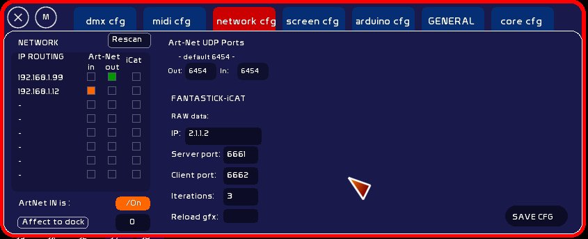

Version 0.8.3:
Un certain nombres d'améliorations significatives ont été apportées à la configuration réseaux.
N'oubliez pas de clicker [SAVE] de façon à enregistrer les paramètres réseaux.
Cette liste permet de voir quels sont les adaptateurs connectés à un réseau.
En face de chaque adresse vous pouvez signifier à WhiteCat que cette adresse sert:
Vous pouvez avoir ces trois types de communication sur des cartes séparées, ou sur la même carte.
Attention:
Lorsque vous spécifiez dans la configuration DMX une adresse IP, il faut que celle - ci soit présente sur les cartes réseau de votre machine. L'onglet de configuration DMX ne concerne que l'adresse vers laquelle envoyer les données. Elle ne définit pas par quelle carte ces données vont être envoyées. Ce qui est l'IP routing.
Vous pouvez vous brancher / débrancher à la volée sur la carte réseau de votre choix ( wifi / RJ45 / adaptateurs PCMCIA-RJ45).
Lorsque vous vous connectez à un adaptateur réseau par ce menu, vous pouvez donc recevoir un signal art-net sur depuis cete carte et cette famille IP.
Pour que l'émission art-net fonctionne, il faut donc que l'envoi défini dans la configuration artnet ( DMX CFG ) vers la famille IP ( 192.168.1.50 par ex) soit de la même famille ( 192.168.1.X ).
Par défaut le port UDP Art-Net est le port 6454. Les interfaces DMX et la plus part des logiciels transmettent ou reçoivent leurs infos sur ce port. Par exemple si le port OUT de WhiteCat n'est pas 6454 la ENTTEC ODE ne recevra rien car elle écoute le port spécifié par le protocole art-net (6454).
Ce qu'il faut bien comprendre, c'est que sur une machine, une seule application peut se brancher sur un port UDP IN, et une seule application peut se brancher sur un port UDP OUT.
La main est prise par ces applications. Comme pour un port USB: si vous branchez votre interface dmx, que vous l'utilisez avec WhiteCat, et que vous lancez Schwarztpeter, çà ne peut pas fonctionner. WhiteCat a la main dessus. Un port IN > une application, un port OUT > une application.
Si vous ouvrez un logiciel comme VVVV avec un node DMX(arnet receiver), puis que vous ouvrez WhiteCat avec le mode serveur enclenché ( réception Art-Net ON), le node de VVVV va disparaitre car WhiteCat prend la main sur le port UDP IN.
Cette problématique des ports a été par exemple réglée sur les logiciels CHAMSYS et MagicQ, où l'on peut spécifier sur quel port émettre et sur quel port recevoir, permettant la cohabitation de plusieurs applications art-net sur la même machine.
Vous pouvez recevoir jusqu'à 4 univers Art-Net dans White Cat.
Ce choix se fait dans les 16 univers du sub 0.
Pour affecter un univers Art-Net à un dock:
Quand vous quittez WhiteCat, ce dernier energistre si vous avez enclenché ou pas le serveur, de façon à rappeler son ouverture au démarrage.
Télécommande iPhone/iPad: vous allez définir ici vers quelle adresse émettre les données vers fantastick, ainsi que les ports UDP à utiliser.
Voir: Fantastick-iCat